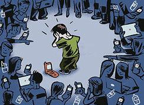

Последици от кибертормоз
Кибертормозът може да има сериозни и дългосрочни последици за физическото и психическото здраве на жертвата. Важно е да разбираме тези последици, за да можем да реагираме навреме.
- Психологически последици
- Социални последици
- Академични последици
- Дигитални последици
- Физически последици
- Последици за семейството
Сигнали за тревога
Ако забележите следните признаци у себе си или близките си, потърсете помощ незабавно:
- Внезапни промени в поведението
- Затворяне в себе си
- Отказ да използва телефон/компютър
- Необяснима тъга или раздразнителност
- Проблеми със съня или апетита
- Спад в училищните оценки
- Избягване на приятели
- Говорене за липса на смисъл в живота
Дългосрочни последици
| Област | Краткосрочно (1-6 месеца) | Дългосрочно (1+ години) |
|---|---|---|
| Психическо здраве | Тревожност, стрес | Депресия, ПТСР |
| Социални връзки | Изолация, недоверие | Трудности в отношенията |
| Образование | Спад в оценките | Ограничени възможности |
| Професионален растеж | Загуба на мотивация | Ограничени кариерни възможности |

{kind=link}
Кибертормозът може да има сериозни последици, но с правилната подкрепа можете да се справите